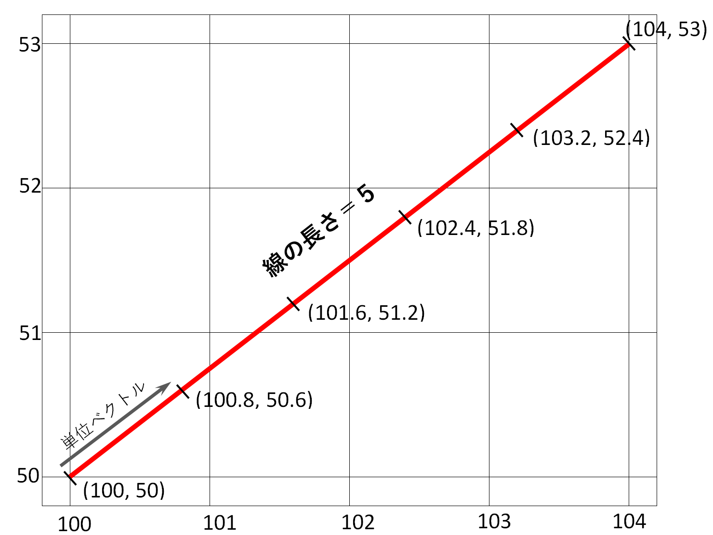
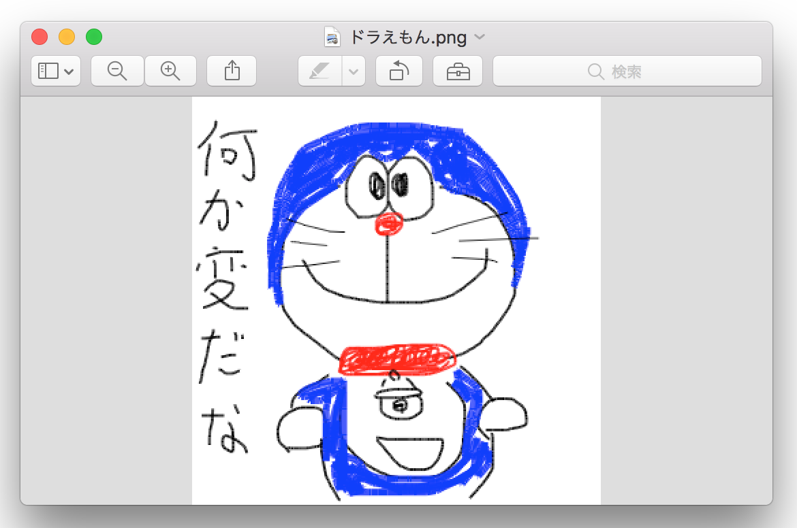
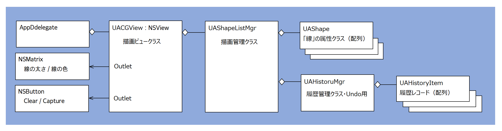

超簡単お絵かきソフト 〜ビューに線を引く応用編〜
マウスのドラッグにより線を引くことができる。線の太さ、色を選択できる。
指定した範囲の線を消すことができる。範囲はマウスの右ボタンのドラッグで作成した四角形の中の線となる。
表示中の画像をpngファイルとして出力することができる。
直前の操作（線の描画及びクリア）を取り消すことができる。Undo機能
サンプル動画
トピックス
線をクリアする
マウスの右ボタンを押しながらドラッグし、薄いグレーで囲まれた矩形を作成する。Clearボタンをクリックすると矩形の中の線がクリアされる。
線の長さの単位
線は１ピクセルの長さのCAShapeLayerオブジェクトの集合として描画する。これにより線のクリアを滑らかに行うことができる。
マウスのドラッグでは、マウスを素早く動かした場合、開始から終了ポイントまで、数十ピクセルになることがある。仮に、これを１つのCAShapeLayerオブジェクトで表すとすると、線のクリアは特定の矩形範囲に含まれる線（オブジェクト）を全て消去することになるので、場合によっては範囲外の線まで消えてしまうことになり見た目に違和感がある。これを避けるために、1ピクセル以上の長さを持った線は1ピクセル単位の線オブジェクトの集合として生成する。
線をプロットする位置は、線をベクトルとしたときの単位ベクトルの積み上げと同じである。下記の例では、座標(100, 50)から座標(104, 53)までドラッグした場合で、長さ1ピクセルの線（CAShapeLayerオブジェクト）を5個作成する。（割り切れない場合は最後の線は1ピクセル未満になる。）

Undo機能の実装
redoに対応できておらず、かなり不器用な方法だと思うが、ひとまず思いつくままに作成してみた。
線を引く、線をクリアするをひとつの操作の単位として履歴レコードを作成し、スタックリストに追加していく。undoを要求されたら最後に追加された履歴レコードを取り出し、それにもとに操作の取り消し（実際は逆の操作）を行う。
ビューのイメージをファイルに出力する
処理の流れ
(1) ビットマップコンテキスト（CGBitmapContext）を作成する
(2) 自身の画像イメージ（レイヤーオブジェクト）をビットマップコンテキストに描画する
(3) ビットマップコンテキストからCGImageを作成する
(4) CGImageからNSBitmapImageオブジェクトを作成する
(5) NSBitmapImageオブジェクトをPNG形式のNSDataオブジェクトに変換する
(6) NSDataオブジェクトをファイルに出力する
クラス構造図

UAShapeクラスは、CAShapeLayerオブジェクトへの参照、オブジェクト番号、始点座標と終点座標を属性として持つ。
UAShapeListMgrクラスは、線（UAShapeオブジェクト）を作成するメソッドを提供し、作成したオブジェクトを配列に保持する。また線をクリアするメソッドを提供する。
UAHistoryItemクラスは一つの操作を記録する。
UAHisoryMgrクラスはUAHistoryItemオブジェクトを保持し、操作の履歴を管理する。